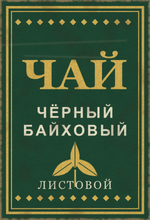
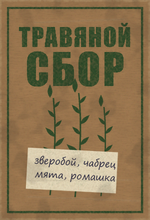
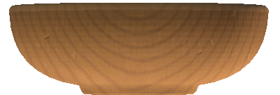

🍲 Готовка на костре
На костре можно сварить чай, отвары и похлёбки. Каждое блюдо даёт временный бафф: быстрее лечит, держит тепло, бережёт выносливость или помогает в бою с мутантами.
Как варить
- Поставь треногу на костёр, повесь кастрюлю (подойдёт и котелок) и разожги огонь.
- Налей чистой воды: от 300 мл до полной кастрюли, это 2 литра.
- Положи ингредиенты прямо в кастрюлю. Одного набора хватает на всю кастрюлю, то есть на две полные фляги.
- Когда вода закипит, начинается варка. Через время из рецепта вода превращается в блюдо, ингредиенты пропадают.
- Пока в кастрюле лежит полный набор, костёр его не сжигает и вода не выкипает. Если чего-то не хватает, вещи будут гореть и вариться как обычно.
- Готовое блюдо сними с огня: на огне оно выкипает, как обычная вода.
Рецепты
| Блюдо | Что положить | Варится | Эффект | Длится |
|---|---|---|---|---|
| Травяной чай | пачка травяного сбора | 1 мин | здоровье +6 в минуту | 15 мин |
| Чифир | пачка чая | 1 мин | выносливость тратится на 30% медленнее | 10 мин |
| Согревающий сбор | пачка травяного сбора + пачка чая | 1 мин | холод не берёт | 20 мин |
| Отвар от радиации | таблетка антирада + пачка травяного сбора | 1,5 мин | радиация выводится, 40 единиц в минуту | 15 мин |
| Мясная похлёбка | 2 куска любого мяса, в том числе мяса мутантов | 2 мин | кровь +50 в минуту | 20 мин |
| Похлёбка из мутанта | голова тушкана, хвост слепого пса или хвост псевдопса + 1 кусок мяса (подойдёт и мясо мутанта) | 2 мин | урон по мутантам и зверям +10% | 15 мин |
| Уха | 1 рыба или 1 филе (карп, скумбрия, сардины, горчаки, минтай, форель) | 1,5 мин | раны кровят вдвое реже | 15 мин |
Время варки считается с момента закипания. Если в кастрюле лежат и сбор, и чай, получится согревающий сбор, а если сбор и антирад, получится отвар от радиации.
Где взять ингредиенты
- Пачка чая (150) и пачка травяного сбора (120) продаются в разделе «Провизия» у Сидоровича и у других торговцев с провизией.
- Таблетки антирада есть почти у всех торговцев.
- Мясо добывается охотой: разделай зверя ножом. Мясо мутантов тоже идёт в похлёбки, с кабанов-мутантов падает по 3 куска.
- Рыба ловится удочкой.
- Голова тушкана, хвост слепого пса и хвост псевдопса добываются разделкой мутантов.
Как есть и пить
- Напитки можно пить прямо из кастрюли или перелить во флягу и бутылку.
- Похлёбки во флягу не наливаются. Их едят из кастрюли или из деревянной миски: налей в миску и выбери «Съесть».
- У чая, отваров и похлёбок в инвентаре видно название, у каждого свой цвет, так что не перепутаешь с водой.
- Бафф включается, когда выпито 100 мл напитка или съедено 150 мл похлёбки.
- Повторная порция того же блюда не складывает эффект, а начинает время заново. Разные блюда действуют одновременно.
- Действующие баффы видны справа на экране вместе с оставшимся временем, при первом глотке приходит сообщение.
- Баффы пропадают при выходе с сервера и при рестарте.
Посуда и пачки

Чай чёрный, пачка
Крепкий листовой чай для чифира и согревающего сбора. Одна пачка на кастрюлю. Цена 150.

Травяной сбор, пачка
Зверобой, чабрец, мята, ромашка. Основа для травяного чая, отвара от радиации и согревающего сбора. Цена 120.

Деревянная миска
Вмещает 500 мл похлёбки. Продаётся пустой. Только для супов, на огонь не ставится. Цена 250.
Отдых у костра
У горящего костра можно отдохнуть: встань рядом, в пределах 5 метров.
- Кровь восстанавливается на 100 в минуту, здоровье на 10 в минуту.
- Пока греешься, голод и жажда не растут.
- Если идёт кровь, отдохнуть не выйдет: сначала перевяжись.
- Когда начинаешь и заканчиваешь отдых, приходит сообщение.
Удобно совмещать: пока варится похлёбка, греешься у того же костра.